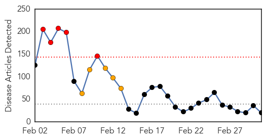
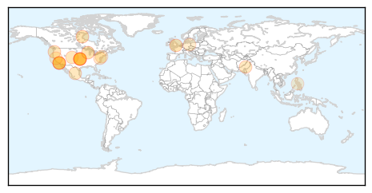
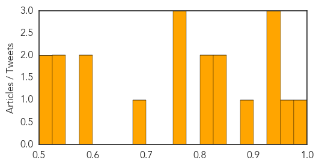

Unknown
30-Day Web Trend
1 alerts, 0 warnings
30-Day Twitter Trend
0 alerts, 0 warnings

Article Locations
Article Confidences

Top Articles:
- 0.973
- Uganda informs of illnesses linked to Typhoid
- 0.971
- Norovirus returns: advice is to stay away from GP
- 0.968
- More salmonella cases at aged care facilities emerge
- 0.917
- Chicago Tribune
- 0.917
- Chicago Tribune
- 0.917
- Chicago Tribune
- 0.917
- Chicago Tribune
- 0.917
- Chicago Tribune
- 0.917
- Chicago Tribune
- 0.917
- Chicago Tribune
- 0.917
- Chicago Tribune
- 0.917
- Chicago Tribune
- 0.912
- Australian school principals hit by salmonella poisoning
- 0.904
- Typhoid outbreak in Pinamungajan now under control
- 0.859
- 1,100 affected as skin disease spreads in Bajaur
- 0.854
- Indy flu cases decrease, some hospitals lift restrictions
- 0.840
- Belford Hospital restricts visitors in bug fight
- 0.828
- Chagas Disease: The New Numbers
- 0.808
- West Texas News
- 0.808
- West Texas News
- 0.807
- Luwero residents in panic over typhoid cases in the area
- 0.790
- Pfizer Receives European Approval for New Indication for Prevenar 13 for Prevention of Vaccine-Type Pneumococcal Pneumonia in Adults
- 0.786
- Pfizer Receives European Approval for New Indication for Prevenar 13 for Prevention of Vaccine-Type Pneumococcal Pneumonia in Adults - News Press Release
- 0.785
- Londoners To Be Tested For Tuberculosis Exposure
- 0.780
- Satsuma schools closed two days after 100+ people sickened - FOX10 News
- 0.764
- Response to typhoid should be long-term
- 0.745
- HIV/Aids complicates fight against kala-azar
- 0.722
- Studies linking fluoride in water to health issues prompt Australian review
- 0.717
- 2 Lodi students test positive for E. coli
- 0.696
- New Wave of Mysterious Disease Hits Kazakhstan Again, Makes People Doze Off for Days on End
- 0.669
- Insurer reveals cyclone damage
- 0.608
- Halifax Health takes steps to protect against deadly superbug
- 0.602
- Mourners gather in Moscow for Nemtsov funeral
- 0.602
- Former CIA director Petraeus pleads guilty to federal charge
- 0.602
- Netanyahu's US visit sparks bipartisan war of words
- 0.602
- Netanyahu warns US Congress of Iran’s ‘march of terror’
- 0.602
- Libya’s government names anti-Islamist army chief
- 0.602
- France to double number of Islamic university courses
- 0.602
- Australia to send 300 extra troops to Iraq in fight against IS
- 0.601
- Why we fight about science
- 0.593
- GeneSight Multi-Gene Combinatorial Pharmacogenomic (CPGx™) Test is More Predictive of Antidepressant Response than Single Gene Tests
- 0.587
- News Scan for Mar 02, 2015
- 0.582
- Pakistan jails 471 parents who refuse to vaccinate children against polio
- 0.571
- Salmonella poisoning strikes 175 Queensland school principals
- 0.571
- Sorry, deze pagina kon niet gevonden worden.
- 0.560
- West Africa - Ebola Virus Disease (EVD) Outbreak, 02/03/2015 - Sierra Leone
- 0.559
- GHS refutes reports of Guinea worm in Upper West Akyem -
- 0.512
- New cases of sleep disorder in Kalachi reported
Top Tweets:
- 0.874
- RT: FLU SCAN: Flu vaccine performance; HCWs, flu, and fever; H7N9 in China; H5N1 in Nigeria http://t.co/z0UoVw5pSS
- 0.591
- Supuestamente mañana van a regalar pancakes en IHOP. ¿Alguien por mí?
- 0.547
- @jprm53: Perdón por tener que comprar hoy pero amanecí con una monga de 7 pare cojones y no tengo drogas Pídele a alguien que tenga (yo).
Measles
30-Day Web Trend
5 alerts, 5 warnings

30-Day Twitter Trend
4 alerts, 0 warnings

Article Locations
Article Confidences
Top Articles:
- 0.981
- Anti-vax measles claim misinterprets data
- 0.958
- WHO calls for more measles vaccination in Europe as large outbreaks persist
- 0.945
- Public Health addresses measles and the importance of vaccinations
- 0.933
- 131 confirmed measles cases in California
- 0.926
- Vaccination saves lives
- 0.890
- WHO calls for more measles vaccination in Europe as large outbreaks persist
- 0.841
- Aliso Niguel High School
- 0.836
- Parents increasingly ask doctors to delay vaccines
- 0.821
- Oregon board endorses eliminating non-medical vaccine exemptions
- 0.813
- Study: Parents increasingly ask doctors to delay vaccines
- 0.759
- Could US measles outbreak reach NZ?
- 0.751
- Letter: Hype of measles worse than illness
- 0.750
- Could Syria really be polio free?
- 0.692
- Health officials perplexed by vaccination skeptics
- 0.592
- Health officials perplexed by vaccination skeptics
- 0.577
- The needless fallout – Vaccination
- 0.550
- Doctors Often Yield to Parents' Requests to Delay Kids' Vaccines
- 0.538
- Health officials perplexed by vaccination skeptics
- 0.519
- Health officials monitoring possible measles case
- 0.508
- Islamic Nation Fights Against Anti-Vaxxers: Starts Arresting Parents Who Object to Vaccinations
Top Tweets:
-
No tweets found for Mar 03, 2015